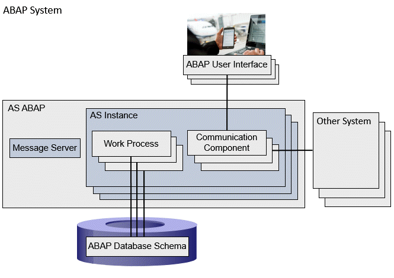

ABAP programs are executed on the Application Server ABAP (AS ABAP) of an
ABAP system. The figure below shows a highly simplified representation of the AS ABAP as part of an ABAP system.

The AS ABAP represents the application layer of the ABAP system. The AS ABAP is identified by a
system ID, which is also the name of the entire ABAP system. Users can log on to the AS ABAP using a
user name. The most important components of an AS ABAP for ABAP program execution are:
AS instance
The actual ABAP program execution takes place in
AS instances (application server instances). One or more AS instances can be instantiated for an AS ABAP. Multiple AS instances are usually distributed across several
host computers. The AS instances communicate with each other using a
message server that exists only once for each AS ABAP.
The communication components connect the AS instances to the
presentation layer of the
ABAP system, or to other systems that themselves can be another AS ABAP or external systems. Examples of communication components are: